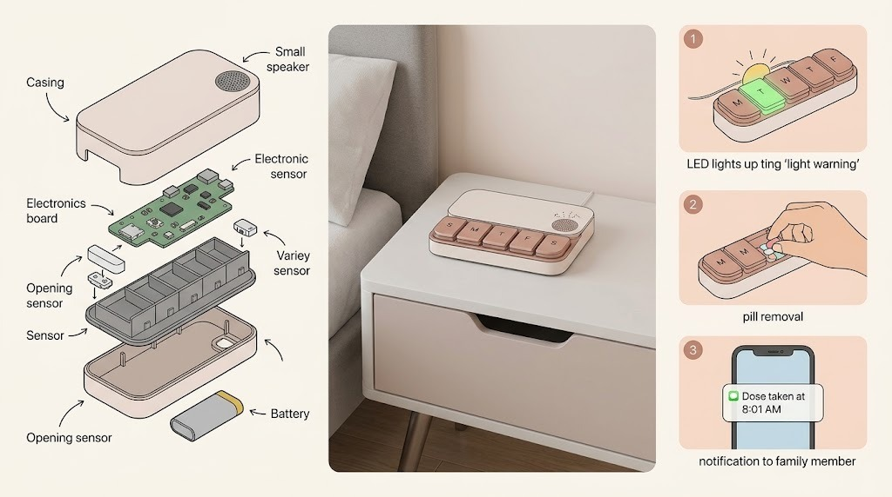
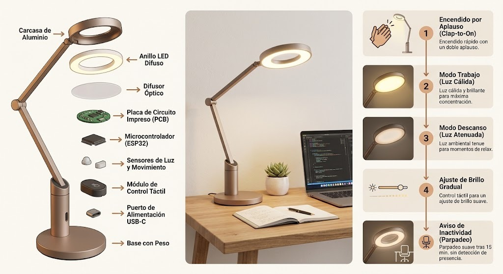
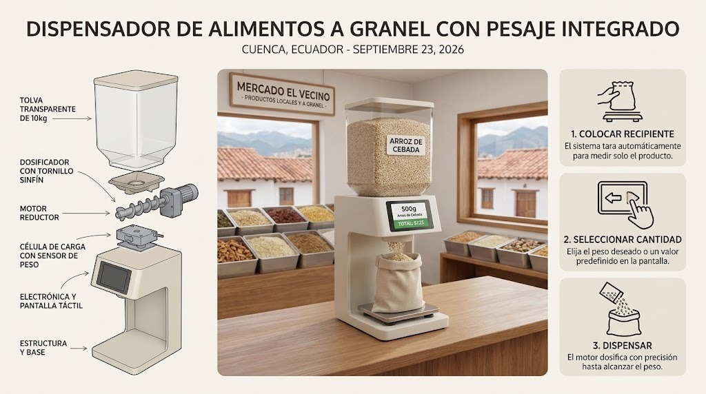
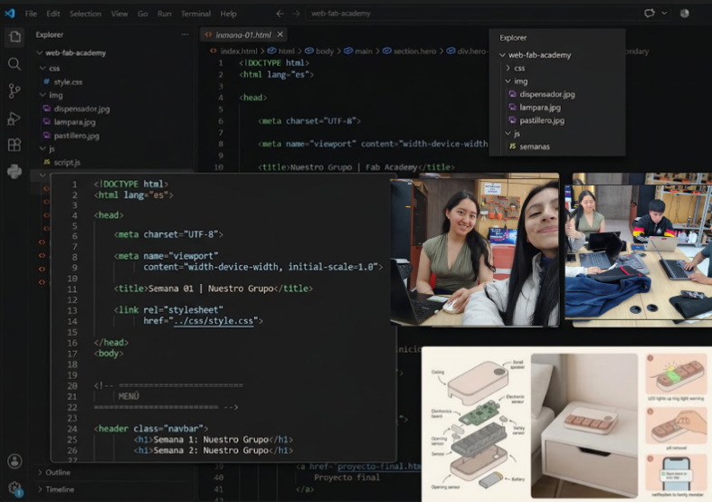

DOCUMENTACIÓN · SEMANA 01
Semana 01
Durante nuestra primera semana comenzamos a organizar el trabajo del grupo y a definir las primeras ideas para nuestro proyecto tangible. También creamos la página web que utilizaremos para documentar nuestro proceso durante las siguientes semanas.
📌 Tema de la semana
Introducción al proyecto, organización del grupo y generación de ideas para desarrollar un proyecto tangible.
📝 Actividades realizadas
Durante esta semana realizamos diferentes
actividades para iniciar nuestro proyecto.
Primero desarrollamos una página web grupal
donde iremos registrando y documentando
nuestro trabajo semana a semana.
Después realizamos una lluvia de ideas
para identificar posibles proyectos
tangibles que puedan resolver una
necesidad o facilitar alguna actividad
cotidiana.
💡 Ideas de proyectos tangibles

Pastillero inteligente
Un pastillero inteligente que utilice luces para indicar a la persona cuándo debe tomar su medicamento, ayudando a recordar las diferentes dosis durante el día.

Lámpara para rutinas de estudio
Una lámpara que se vaya encendiendo paulatinamente para acompañar el desarrollo de una rutina o método de estudio, ayudando a organizar el tiempo dedicado al aprendizaje.

Dispensador a granel
Un dispensador que permita colocar diferentes productos a granel y facilitar su almacenamiento y distribución de manera práctica.
DOCUMENTACIÓN VISUAL
📷 Evidencias
Registro visual de las actividades realizadas durante la Semana 01.

Evidencia de nuestro trabajo durante la primera semana.
🌱 Lo aprendido
Durante esta semana aprendimos a organizar nuestras primeras ideas como grupo y a identificar posibles soluciones mediante la creación de proyectos tangibles. También comenzamos a familiarizarnos con la creación de una página web para documentar nuestro proceso de trabajo y aprendizaje.
⚠️ Problemas y soluciones
Uno de los primeros retos fue organizar
las ideas del grupo y encontrar propuestas
que pudieran convertirse en proyectos
tangibles.
Para solucionarlo realizamos una lluvia
de ideas y analizamos diferentes propuestas,
llegando a definir tres posibles proyectos
para continuar evaluando durante las
siguientes semanas.